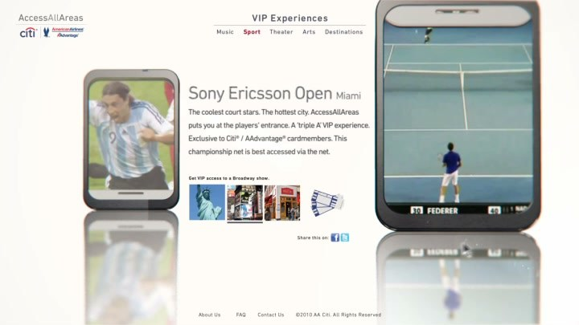
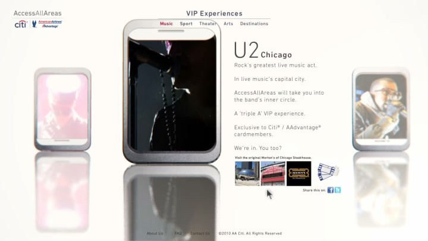
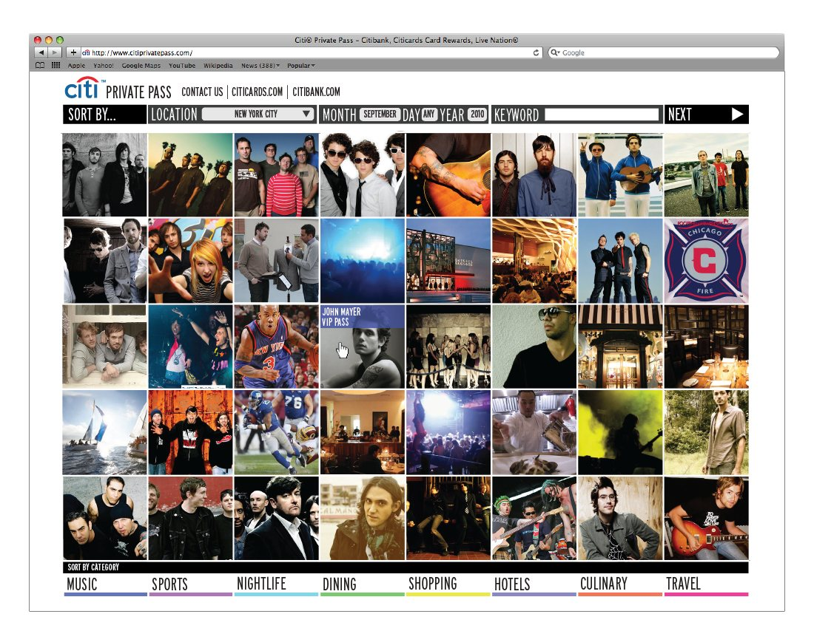
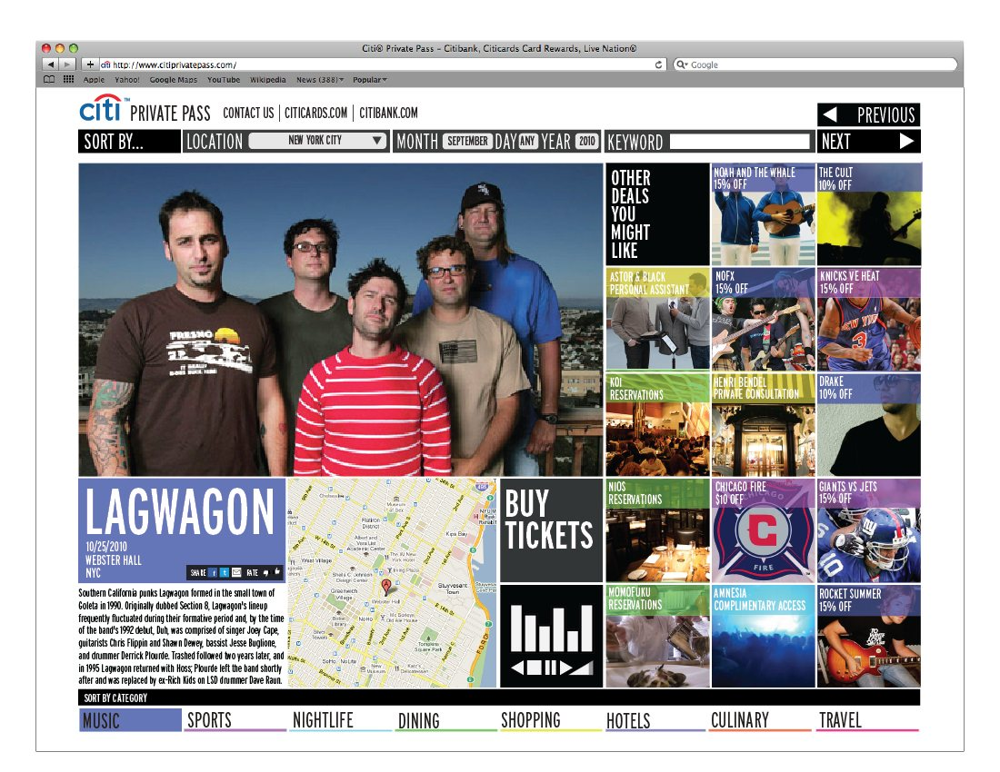
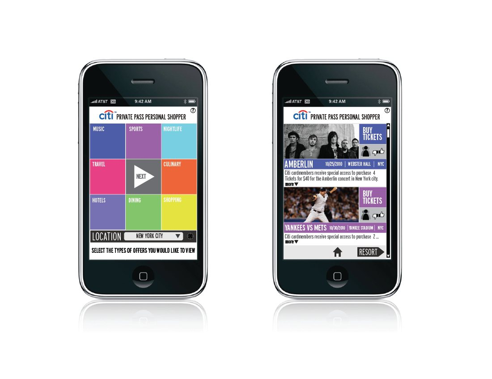
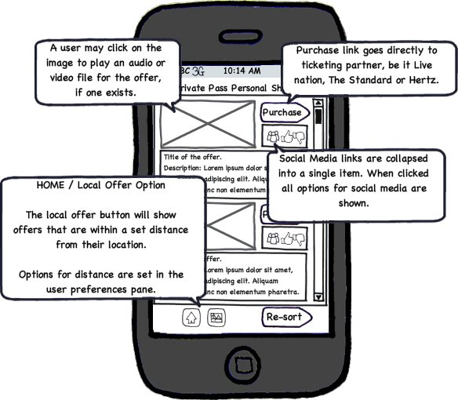

Citi and American Airlines
For a Citi pitch to American Airlines, I produced a 3D 'website trailer' that sold an Access All Areas site before a line of it was built, and did all its sound. I also reworked Citi Private Pass for web and iPhone.
Creative productionAudioProduct
$12kfor all production on the pitch film
1080iHD video, rendered on four machines over two days
100%of the sound: editing, foley and music
4clients: Citibank, American Airlines, Pfizer, J&J
The problem
- Citi wanted to sell American Airlines on an Access All Areas website, with about $12k for all production.
- Jack Morton had the concept. The question was how to make the client feel it.
- Citi Private Pass, cardholder access to music, sports, dining and travel, needed to be easier to search and more fun to use.
What I did
- Turned the website idea into a film: a 3D walkthrough in Maya, rendered as full HD video, so the client could experience the site before it existed.
- Did all the sound editing and foley, the airplane sounds and all the music.
- Sourced and transcoded the video, and brought in a trusted shop for the 3D animation and texture mapping.
- Shaped the Citi Private Pass redesign: an offer grid by category and location, offer detail with tickets, and an iPhone app with user preferences.
- Created, pitched and presented digital concepts to Citibank and American Airlines, with proposals, deliverable lists and cost estimates.
- Worked on the Black Eyed Peas concert in Times Square, and managed Pfizer's internal VOL.UNTEERZ projects.
What changed
- The client loved the pitch film.
- Citi Private Pass got a new look: less web, more mobile app.
- A repeatable pitch-to-delivery process.





